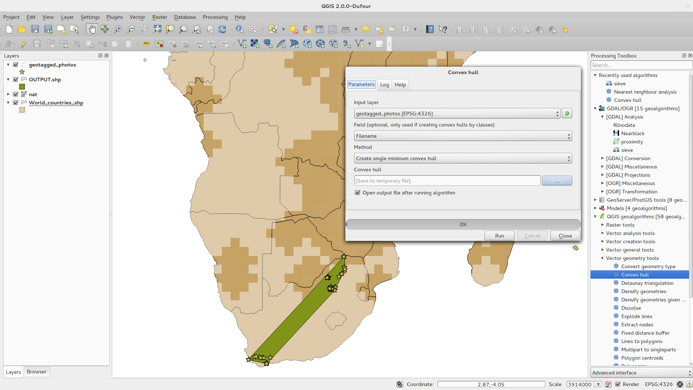
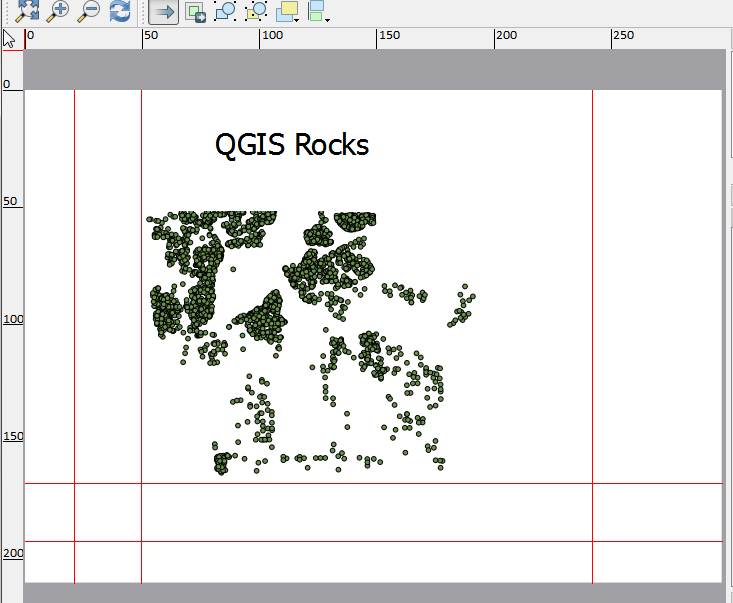

Modifications apportées par QGIS 2.0¶
- Outils d’analyse
- Options de l’application et des projets
- Explorateur
- Prestataires de données
- Fonctionnalité: Amélioration du fournisseur de données Raster
- Fonctionnalité : Support d’Oracle Spatial
- Fonctionnalité: Ajout du fournisseur de données Web Coverage Service
- Fonctionnalité: Coupure cumulative à 2% par défaut des rasters
- Fonctionnalité: Format d’identification WMS
- Fonctionnalité : Support du WMTS
- Général
- Étiquetage
- Légende des couches
- Composeur de cartes
- Fonctionnalité: Éléments de carte HTML
- Fonctionnalité: Gestion du multipages
- Fonctionnalité: Etiquettes du composeur basées sur des expressions
- Fonctionnalité: Lignes à accrochage automatique
- Fonctionnalité: Lignes d’accrochage manuel
- Fonctionnalité : Génération de cartes en série
- Fonctionnalité: Gestion de l’aperçu automatique dans le cadre de carte
- Fonctionnalité: Mélange de couches
- Fonctionnalité: Gestion des étiquettes HTML
- Fonctionnalité: Légende multi-colonne du composeur
- Fonctionnalité: Mises à jour du gestionnaire de composition
- Extensions
- Programmation
- Fonctionnalité : Nouvelle Console Python
- Fonctionnalité: Encore plus de fonctions dans le générateur d’expressions
- Fonctionnalité: Fonctions d’expression personnalisées
- Fonctionnalité: Nouvelle API python plus propre
- Fonctionnalité : Compatibilité de code avec les versions 1.x
- Fonctionnalité: Macros de projet en Python
- Symbologie
- Fonctionnalité: Propriétés définir par les données
- Fonctionnalité: Amélioration du gestionnaire de symboles des couches
- Fonctionnalité: Gestion de la transparence dans la définition des couleurs
- Fonctionnalité: Contrôle des couleurs pour les couches raster
- Fonctionnalité: Copie de la symbologie entre couches
- Fonctionnalité: Sauvegarder les styles dans votre base de données
- Fonctionnalité: Gestion des rampes de couleur
- Fonctionnalité: Paramétrer des styles personnalisés par défaut pour tous les types de couches
- Interface utilisateur
- Fonctionnalité: Nouveau thème d’icônes
- Fonctionnalité: Onglets latéraux et groupes repliables
- Fonctionnalité: Notifications douces
- Fonctionnalité: Polices personnalisées et feuilles de style Qt
- Fonctionnalité: Sélecteur de couleur dynamique et ses boutons
- Fonctionnalité : Annotations SVG
- Fonctionnalité : Constructeur de formulaire par glisser-déposer
- Fonctionnalité: Outil d’action par défaut
Outils d’analyse¶
Fonctionnalité: Ligne de commande de géo-traitements¶
Pour un accès plus rapide aux fonctionnalités de géo-traitements, lancez la ligne de commande de géo-traitement (Ctrl + Alt + M) et commencez à taper le nom de l’outil que vous cherchez. La ligne de commande vous montrera les options disponibles et les lancera pour vous. Plus besoin de chercher à travers les menus pour trouver des outils, il sont directement à portée de vos doigts.

Fonctionnalité : Amélioration de l’extension Carte de Chaleur¶
L’extension Cartes de chaleur a subit de nombreuses améliorations et optimisations rendant la création de cartes de chaleur beaucoup plus rapide. De plus, vous avez maintenant le choix dans la fonction kernel à utiliser.

Fonctionnalité: Gestion des géo-traitements¶
Le projet SEXTANTE a été porté et inclus dans le cœur des fonctionnalités de QGIS. SEXTANTE a été renommé en “Géo-traitements” et cela introduit un nouveau menu dans QGIS d’où vous pouvez accéder à une riche boîte à outil d’analyse spatiale. La boîte à outils des traitements dispose d’incroyables fonctionnalités, comme une API de programmation en Python qui vous permet d’ajouter facilement de nouveaux outils, ainsi que des traitements externes vers des outils populaires de traitement spatial tels que GRASS, OTB, SAGA, etc.

Fonctionnalité: Modeleur graphique de géo-traitements¶
Une des meilleures fonctionnalités du nouveau cadre apporté par les géo-traitements est la possibilité de combiner les outils de manière graphique. En utilisant le Modeleur graphique de Géo-traitements, vous pouvez concevoir des analyses complexes à partie d’une séries de petits modules unitaires. Vous pouvez sauvegarder ces modèles et les utiliser en tant que briques dans des modèles plus complexes. De la puissance fabuleuse, intégrée directement dans QGIS et simple d’accès.

Options de l’application et des projets¶
Fonctionnalité: Définition du projet ouvert par défaut et des modèles de projet¶
Avec QGIS 2.0 vous pouvez indiquer ce que QGIS doit faire lorsqu’il démarre: Nouveau Projet (le comportement par défaut charge un projet vierge), Plus Récent (quand vous lancez QGIS, ce dernier charge le dernier projet sur lequel vous avez travaillé), Spécifique (toujours charger un projet spécifique à l’ouverture de QGIS). Vous pouvez utiliser le répertoire de modèle de projet pour indiquer où sont stockés vos modèles. Chaque projet que vous stockerez dans ce répertoire sera disponible comme modèle dans le menu Projet --> Nouveau depuis un modèle.

Fonctionnalité: variables d’environnement système¶
Les variables d’environnement Système peuvent maintenant être visualisées et certaines configurées dans la boîte de dialogue des Options. Ceci est pratique sur certaines plateformes, notamment sur Mac, où une application avec interface graphique n’hérite pas nécessairement des paramètres de l’environnement en ligne de commande de l’utilisateur. Ceci est également utile pour paramétrer/visualiser les variables d’environnement des outils externes contrôlés par la boîte à outils des géo-traitements, par exemple SAGA, GRASS et pour activer les sorties de débogage pour des sections spécifiques du code source.

Fonctionnalité: Echelles définies par l’utilisateur¶
Une liste d’échelles peut maintenant être configurée au niveau de l’application pour remplacer celles définies au niveau du projet. La liste s’affiche dans la boîte de dialogue Échelle de la barre d’état de la fenêtre principale, permettant un accès rapide aux échelles prédéfinies pour visualiser et travailler plus efficacement avec les sources de données. Les échelles définies peuvent être exportées dans un fichier XML qui peut être importé dans d’autres projets ou dans une autre application QGIS.

Explorateur¶
Fonctionnalité: Amélioration du panneau de navigation¶
- Les répertoires peuvent être filtrés avec des jokers ou des expressions rationnelles.
- Nouvel
Accueil du projet(répertoire parent du projet courant) - Vue
Propriétésdu répertoire sélectionné dans une boîte de dialogue. - Choisir quels répertoires à
Scanner rapidement. - Choisir d”
Ajouter un répertoiredirectement auxFavorisvia la boîte de dialogue de navigation du système de fichiers. - Nouveaux
/Volumessur Mac (répertoire caché pour l’accès aux disques externes). - Nouveau groupe
OWS(regroupement des connexions disponibles de serveur carto) - Ouvrir un deuxième explorateur (
Vue -> Panneaux -> navigateur (2)) : permet d’utiliser le glisser-déposer entre les deux panneaux d’exploration. - Les icônes sont maintenant triées et regroupées par type (système de fichier, bases de données, serveurs cartographiques).
- Les
Propriétésdes couches ont maintenant un meilleur rendu.

Prestataires de données¶
Fonctionnalité: Amélioration du fournisseur de données Raster¶
Le système du fournisseur de données raster a été complètement revu. L’une des meilleures nouvelles fonctionnalités qui découle de ce travail est la possibilité de lancer “Couche -> Enregistrer sous…” pour enregistrer une couche raster dans une nouvelle couche. Lors de cette action, vous pouvez découper, ré-échantillonner et re-projeter la couche vers un autre Système de Coordonnées de Référence. Vous pouvez également enregistrer une couche raster en tant qu’image générée lorsque vous avez, par exemple, un raster à bande unique sur lequel vous avez appliqué une palette de couleur. Vous pouvez sauvegarder le rendu de ce raster dans une couche RGB géo-référencée.


Fonctionnalité: Ajout du fournisseur de données Web Coverage Service¶
QGIS fournit désormais un accès natif aux couches servies par Web Coverage Services. Le processus d’ajout de ces couches WCS est identique à l’ajout des couches WMS ou WFS.
Fonctionnalité: Coupure cumulative à 2% par défaut des rasters¶
De nombreux produits d’image raster ont un grand nombre de valeurs aberrantes ce qui conduit à un rendu d’images un peu délavé en apparence. QGIS 2.0 introduit un contrôle plus fin sur le rendu des rasters, en ajoutant une coupure cumulative des valeurs, par défaut, entre 2% et 98% lors de la détermination de l’espace de couleur de l’image. L’image de gauche est rendue par QGIS 1.8 alors que l’image de droite est rendue par QGIS 2.0 avec les options par défaut.

Fonctionnalité: Format d’identification WMS¶
Il est maintenant possible de choisir le format de résultat de l’outil d’identification pour les couches WMS si plusieurs formats sont disponibles sur le serveur. Les formats gérés sont le HTML, à l’élément (CML) et en texte brut. Si le format d’élément (GML) est sélectionné, le résultat aura la même forme que pour les couches vecteur, la géométrie pourra être surlignée et l’entité disposant d’attributs et de géométrie pourra être copiée dans le presse-papier et collée dans une autre couche.

Fonctionnalité : Support du WMTS¶
Le client WMS de QGIS gère maintenant le protocole WMTS (Web Mapping Tile Service), incluant la sélection de sous-ensemble comme le découpage par périodes de temps. Lors de l’ajout d’une couche WMS depuis un serveur disposant de ce service, vous serez sollicité pour choisir la période de temps à afficher.

Général¶
Fonctionnalité : Quantum GIS ne s’appellera plus que “QGIS”¶
Le mot “Quantum” dans “Quantum GIS” n’a jamais eu une signification particulière et la dualité des termes Quantum GIS et QGIS pour parler du projet a généré de la confusion. Nous rationalisons notre projet et dans ce processus, nous avons officiellement abandonné l’utilisation du mot Quantum. A partir de maintenant nous officierons sous le nom de QGIS (écrit avec toutes les lettres en majuscule). Nous allons mettre à jour notre code source ainsi que nos publications pour tenir compte de ce changement.

Étiquetage¶
Fonctionnalité : Nouveau système d’étiquetage¶
Le système d’étiquettes a été complètement revu. Il inclut désormais de nombreuses fonctionnalités telles que les ombres portées, les symboles de “plaques d’autoroutes” ainsi que de nombreuses options dépendantes des données ainsi que des améliorations de performances. Nous supprimons progressivement “l’ancien système d’étiquettes”, néanmoins vous le trouverez encore présent dans cette version. Attendez-vous à ce qu’il disparaisse lors de la prochaine version.

Fonctionnalité: Utilisation des expressions dans les étiquettes¶
Toute la puissance des expressions des étiquettes classique peut maintenant être utilisée pour chacune des propriétés des étiquettes. Presque toutes les propriétés peuvent être définies avec une expression ou une valeur de champ, vous donnant plus de contrôle sur le rendu d’étiquette. Les expressions peuvent se référer à un champ (par exemple, définir la taille de la police avec la valeur du champ “police”) ou une expression plus complexe.
Exemples de propriétés liées:
- Police
- Taille
- Style
- Taille du tampon

Fonctionnalité: Obsolescence de l’ancien moteur d’étiquettes¶
L’utilisation de l’ancien moteur d’étiquettes disponible sous QGIS <= 1.8 est maintenant déconseillée (obsolescence). Il n’a néamoins pas été supprimé. Cela permet aux utilisateurs de migrer les projets existants de l’ancien vers le nouveau moteur d’étiquettes.
Les recommandations suivantes s’appliquent à l’utilisation de l’ancien moteur sous QGIS 2.0:
- L’onglet d’étiquetage désuet est supprimé de la fenêtre Propriétés de la couche vecteur dans les nouveaux projets ou dans les anciens projets qui n’utilisent pas ce moteur d’étiquetage.
- L’onglet d’étiquetage désuet reste actif dans les anciens projets ouverts, si au moins une couche l’utilise, et ne disparaît pas lors de la sauvegarde du projet, même si aucune des couches utilisant l’ancien moteur n’a cette option d’activée.
L’onglet d’étiquettage désuet peut être activé/désactivé pour le projet en cours via des commandes dans la console Python:
>>> QgsProject.instance().writeEntry('DeprecatedLabels', '/Enabled', True | False)
# or
>>> QgsProject.instance().removeEntry('DeprecatedLabels', '/')
NOTE : il y a de grandes chances que l’ancien système d’étiquetage soit complètement retiré dans la prochaine version stable de QGIS. Merci de migrer vos anciens projets.

Légende des couches¶
Fonctionnalité: Options et retour visuel de la légende¶
- Décompte total des entités dans la couche ainsi que par symbole.
- Les couches vectorielles en mode édition sont matérialisées par un crayon rouge lorsque des modifications n’ont pas encore été validées (non enregistrées).
- La couche active est maintenant soulignée notamment pour l’indiquer lors d’une sélection de plusieurs couches.
- Cliquer dans le blanc de la liste des couches, désélectionne maintenant la sélection.
Les clics-droitssont maintenant traités en tant queclics-gauchesavant d’afficher le menu contextuel, permettant de cliquer une seule fois au lieu de deux.- Les groupes et les couches peuvent utiliser optionnellement une police en gras.
- Les icônes de d’aperçu des couches raster peuvent être désactivées pour les projets où le rendu est lent.

Fonctionnalité: Dupliquer une couche existante¶
Dupliquer les couches vecteur ou raster sélectionnées depuis la légende. Revient à importer la même couche une deuxième fois, en tant que couche distincte, puis à copier/coller le style et les attributs de symobologie.

Fonctionnalité: Commande d’éditions multi-couches¶
L’utilisateur peut maintenant sélectionner plusieurs couches dans la légende et si une ou plusieurs de ces couches vecteurs sont en édition, il peut choisir de sauvegarder, de revenir en arrière ou d’annuler les changements non enregistrés. L’utilisateur peut également appliquer ces actions sur toutes les couches, indépendamment de la sélection.

Composeur de cartes¶
Fonctionnalité: Éléments de carte HTML¶
Vous pouvez maintenant placer des éléments en html sur votre carte.

Fonctionnalité: Gestion du multipages¶
Une fenêtre de composeur peut maintenant contenir plus d’une page.

Fonctionnalité: Etiquettes du composeur basées sur des expressions¶
Les étiquettes du composeur dans la version 1.8 était assez limitées et ne permettaient que l’utilisation d’une seule variable $CURRENT_DATE. Dans la version 2.0 la totalité de la gestion des expressions a été ajoutée pour améliorer le contrôle final sur les étiquettes.
Une étiquette avec une expression telle que:
This was printed on: [% format_date( $now, 'dd.MM.yyyy')%]
sera évaluée au moment de l’impression (ou à l’affichage) pour générer:
This was printed on: 06.09.2013
Lorsque la génération d’atlas est activée, les valeurs d’attributs de l’entité courante seront également accessibles dans les expressions permettant des choses telles que:
Asset ID [% "ID" %] and the Tree Type is [% "TreeType" %]

Fonctionnalité: Lignes à accrochage automatique¶
Avoir les éléments bien alignés sur la carte est primordial pour réaliser de belles cartes imprimées. Des lignes d’accrochage automatique ont été ajoutées pour permettre d’aligner facilement les objets entre eux, en glissant simplement un objet près d’un autre.

Fonctionnalité: Lignes d’accrochage manuel¶
Parfois, vous avez besoin d’aligner des objets à certains endroits du composeur. Avec les nouvelles lignes d’accrochage manuel, vous pouvez ajouter des lignes d’accrochage vous permettant d’aligner les objets. Il suffit de cliquer et glisser depuis la règle en haut ou à droite de la fenêtre pour ajouter une nouvelle ligne de repère.

Fonctionnalité : Génération de cartes en série¶
N’avez-vous jamais eu besoin de créer une série de cartes ? Bien sûr que si ! Le composeur dispose maintenant d’un outil pour générer des atlas. La couche utilisée pour déterminer l’emprise des cartes peut être une couche de points, lignes ou polygones et les attributs de cette couche peuvent être utilisés pour générer des zones de texte adaptées à chaque carte d’une série.

Fonctionnalité: Gestion de l’aperçu automatique dans le cadre de carte¶
Vous avez besoin d’afficher l’étendue actuelle de votre carte dans une fenêtre d’aperçu plus petite ? Vous pouvez maintenant le faire. Le cadre de carte permet maintenant de montrer l’emprise d’un autre et il sera mis à jour lors d’un déplacement. Utiliser cette fonctionnalité avec la génération d’atlas permet de générer de plus belles cartes. Le cadre d’aperçu utilise le même type de style que les objets de cartes normaux de manière à ne pas brider votre créativité.

Fonctionnalité: Mélange de couches¶
Le mélange de couches permet de combiner les couches d’une manière nouvelle et intéressante. Dans les anciennes versions, tout ce que vous pouviez faire était de rendre la couche transparente. Vous pouvez maintenant choisir des options plus avancées telles que « multiplier », « assombrir », etc.
La fusion peut être utilisée dans les vues de cartes normales ainsi que dans le composeur d’impression. Consultez « Vintage map design using QGIS » pour lire un tutoriel sur la manière de mélanger des couches pour tirer parti d’images de fond.

Fonctionnalité: Gestion des étiquettes HTML¶
Le support HTML a été ajouté aux étiquettes du composeur de cartes afin de vous offrir plus de contrôle sur vos cartes finales. Les étiquettes HTML gèrent pleinement les feuilles de style css, html, et même javascript si c’est ce qui vous enchante.
Fonctionnalité: Légende multi-colonne du composeur¶
La légende du composeur d’impression gère maintenant les colonnes multiples. La division d’une couche de plusieurs classes en multiples colonnes est optionnelle. Les couches de symbole simple sont maintenant ajoutées en tant qu’élément à une seule ligne. Trois styles différents peuvent être affectés au titre de groupe ou à la couche: Groupe, Sous-Groupe ou Caché. Les styles du titre permettent de grouper arbitrairement de manière visuelle les objets. Par exemple, une couche simple symbole peut être affichée en tant qu’objet sur une simple ligne ou avec le titre de la couche (comme en version 1.8), les symboles de plusieurs couches qui se suivent peuvent être regroupés dans un seul groupe (en cachant les titres), etc. Le décompte des entités peut être ajouté aux étiquettes de la légende.

Fonctionnalité: Mises à jour du gestionnaire de composition¶
Les améliorations suivantes ont été réalisées sur le gestionnaire de composition :
- Le nom d’un composeur de carte peut maintenant être défini au moment de sa création, en choisissant optionnellement d’utiliser le nom d’une autre composition.
- Il est désormais possible de dupliquer le composeur
- L’option
Composeur videet depuisSpécifique(dans le gestionnaire de composition) créé une composition à partir de n’importe quel modèle stocké dans le système de fichiers. - Le projet peut maintenant être enregistré depuis l’espace de travail du composeur
- Toutes les actions de gestion du composeur sont désormais directement accessibles depuis l’espace de travail du composeur
Extensions¶
Fonctionnalité : Gestionnaire d’extensions réorganisé¶
Dans QGIS 1.x, la gestion des extensions était un peu confuse avec deux interfaces, une pour gérer les extensions déjà installées et l’autre pour récupérer les extensions Python depuis le dépôt des extensions. Dans QGIS 2.0, nous avons introduit un nouveau gestionnaire unifié d’extensions qui fournit une seul point pour télécharger, activer/désactiver et gérer de manière générales vos extensions. L’interface utilisateur est appréciable avec ses deux onglets et ses icônes facilement reconnaissables.

Programmation¶
Fonctionnalité : Nouvelle Console Python¶
La nouvelle console Python vous donne encore plus de puissance à l’aide de la complétion automatique, de la coloration syntaxique et des polices ajustables. L’éditeur de code permet l’intégration de gros blocs de code par la possibilité d’ouvrir et de lancer des fichiers Python dans la session QGIS.

Fonctionnalité: Encore plus de fonctions dans le générateur d’expressions¶
Étant donné que le moteur d’expression est utilisé de plus en plus au cœur de QGIS, de nouvelles fonctions ont été ajoutées au générateur d’expressions où elles sont toutes accessibles. Toutes les fonctions incluent une aide complète et un guide d’utilisation pour faciliter leur utilisation.

Fonctionnalité: Fonctions d’expression personnalisées¶
Si le moteur d’expression ne dispose pas de la fonction dont vous avez besoins, pas d’inquiétude ! De nouvelles fonctions peuvent être ajoutées via une extension en utilisation une API Python simplifiée.

Fonctionnalité: Nouvelle API python plus propre¶
L’API Python a été nettoyée pour fournir une expérience de développement plus propre et plus pythonesque. L’API QGIS2.0 utilise SIP v2 qui supprime le recours à la logique floue des fonctions toString() et toInt() qui étaient nécessaires pour travailler avec des valeurs. Les types sont maintenant convertis en types Python natifs. L’accès aux attributs est maintenant réalisé au niveau de l’entité elle-même en utilisant une recherche par clef; plus besoin de recherche par index ou par affectation d’attribut.
>>> feature['mycolumn'] = 10
>>> feature['mycolumn']
10
La manière de lire les entités d’une couche a également été améliorée pour permettre la gestion du rendu multiple dans les futures versions.
for feature in layer.getFeatures():
print feature['mycolumn']

Fonctionnalité : Compatibilité de code avec les versions 1.x¶
Comme il s’agit d’une version majeure, l’API n’est pas complètement compatible avec les précédentes versions 1.x. Dans la plupart des cas, le portage de votre code devrait être assez simple - vous pouvez utiliser ce guide pour commencer. Merci d’utiliser la liste de diffusion des développeurs si vous avez besoin d’assistance.

Fonctionnalité: Macros de projet en Python¶
Un module Python peut être sauvegardé dans un fichier de projet .qgs, il peut être chargé et fournir des fonctions spécfiques qui seront appeler lors des évènements suivants:
openProject()saveProject()closeProject()
Le fait de pouvoir lancer des macros se configure dans les options de l’application.

Symbologie¶
Fonctionnalité: Propriétés définir par les données¶
A l’aide des propriétés définies par les données, il est possible de contrôler le type de symbole, la taille, la couleur, la rotation ainsi que beaucoup d’autres propriétés à travers les attributs des entités.

Fonctionnalité: Amélioration du gestionnaire de symboles des couches¶
Le nouvel aperçu des symboles de couches utilise une structure en arbre pour faciliter et améliorer l’accès à l’ensemble des calques de symboles.

Fonctionnalité: Gestion de la transparence dans la définition des couleurs¶
Dans la majorité des endroits où vous pouvez sélectionner des couleurs, QGIS vous permet maintenant de spécifier le canal alpha (qui détermine le niveau de transparence de la couleur). Cela vous permet de créer de belles cartes et de cacher facilement les données que vous ne voulez pas montrer aux utilisateurs.

Fonctionnalité: Contrôle des couleurs pour les couches raster¶
QGIS 2.0 vous permet de contrôler avec précision l’apparence des couches raster que vous souhaitez représenter. Vous avez maintenant un contrôle complet sur la luminosité, le contraste et la saturation des couches raster. Il y a même des options permettant l’affichage des trames en niveaux de gris ou de colorier avec une couleur spécifique.

Fonctionnalité: Copie de la symbologie entre couches¶
Il est maintenant très facile de copier le style d’une couche et de l’appliquer à une autre. Si vous travaillez sur des couches de même type, il suffit d’un simple clic-droit puis un clic sur Copier le style puis un nouveau clic-droit sur une autre couche et enfin un clic sur Coller le style.

Fonctionnalité: Sauvegarder les styles dans votre base de données¶
Si vous utilisez une base de données pour stocker vos couches vecteurs, vous pouvez maintenant y stocker directement les styles de chaque couche. Cela permet de partager facilement les styles de couche au sein d’une entreprise ou d’un environnement multi-utilisateurs.

Fonctionnalité: Gestion des rampes de couleur¶
Les rampes de couleur sont maintenant disponibles dans de nombreux endroits de l’interface de symbologie QGIS et ce dernier fournit un jeu extensible de rampes de couleurs prédéfinies. Vous pouvez également fabriquer les vôtres et de nombreux thèmes issus de cpt-city sont inclus de base dans QGIS. Les rampes de couleur gèrent même complètement la transparence.

Fonctionnalité: Paramétrer des styles personnalisés par défaut pour tous les types de couches¶
Maintenant, QGIS vous permet de contrôler comment les nouvelles couches seront dessinées lorsqu’elles ne disposent pas d’un fichier de style .qml existant. Vous pouvez également paramétrer le niveau de transparence par défaut pour les nouvelles couches et indiquer si les symboles utilisés seront colorisés de manière aléatoire.

Interface utilisateur¶
Fonctionnalité: Nouveau thème d’icônes¶
Nous avons mis à jour le thème d’icônes pour utiliser le thème “GIS” qui introduit une représentation plus conforme et plus profesionnelle dans l’interface utilisateur de QGIS.

Fonctionnalité: Onglets latéraux et groupes repliables¶
Nous avons standardisé la présentation des onglets et avons introduit les groupes repliables dans la plupart de nos boîtes de dialogue afin de rendre la navigation dans les options plus facile ainsi que pour mieux exploiter la surface de l’écran.

Fonctionnalité: Notifications douces¶
Dans de nombreuses situations, nous souhaitons vous dire quelque chose, mais ne souhaitons pas interrompre votre travail ou vous perturber. Avec le nouveau système de notification, QGIS peut vous communiquer des informations importantes via une barre de message jaune qui apparaît en haut du canevas de carte mais qui ne vous contraint pas à la prendre en compte si vous êtes occupé à faire autre chose. Les programmeurs peuvent créer ces notifications (par exemple dans une extension) à partir de notre API Python.

Fonctionnalité: Polices personnalisées et feuilles de style Qt¶
La police système utilisée pour l’interface utilisateur peut maintenant être paramétrée. N’importe quelle extension C++ ou Python qui est ouverte par l’application principale QGIS ou qui a copié les feuilles de style de l’interface graphique peut hériter de ce style. C’est très utile pour gérer les problèmes d’interface suivant les plate-formes et lorsqu’on utilise les Widgets Qt comme QgsCollapsibleGroupBox.
La feuille de style générée par QGIS pour l’interface graphique de l’application pour la plate-forme courante peut être accédée après le lancement de ce qui suit (en PyQGIS):
qgis.utils.iface.mainWindow().styleSheet()

Fonctionnalité: Sélecteur de couleur dynamique et ses boutons¶
L’ensemble des boutons de sélection de couleur de l’interface a été mis à jour pour offrir une meilleure visualisation de la transparence (canal “alpha”). Le sélecteur de couleur ouvert par les nouveaux boutons de couleur sera celui par défaut du système d’exploitation. Si l’utilisateur a coché l’option Utiliser les fenêtres natives du choix de couleur dans Options -> Général -> Application, tout changement au niveau du sélecteur de couleur sera immédiatement affiché dans le bouton de couleur pour tout élément actuellement édité, lorsque c’est applicable.

Fonctionnalité : Annotations SVG¶
Avec QGIS 2.0 vous pouvez maintenant enregistrer des annotations SVG sur votre carte, soit en l’épinglant à un endroit défini, soit dans une position relative dans le canevas de carte.

Fonctionnalité : Constructeur de formulaire par glisser-déposer¶
QGIS 2.0 introduit un intéressant nouveau système pour créer des formulaire de saisie de données. Avec le designer de formulaire par glisser-déposer, vous pouvez créer des formulaires agréables à l’oeil, avec des onglets pour regrouper les champs communs ensemble. Il est maintenant beaucoup plus facile de contrôler l’expérience utilisateur de saisie de données.

Fonctionnalité: Outil d’action par défaut¶
Si vous utilisez les actions des couches vecteur (ou des actions simples peuvent être lancées lorsque vous cliquez sur une entité), alors vous adorerez le nouvel outil d’action. Avec ce dernier, vous pouvez sélectionner l’action active et la lancer lorsque vous cliquez sur les entités géographiques.